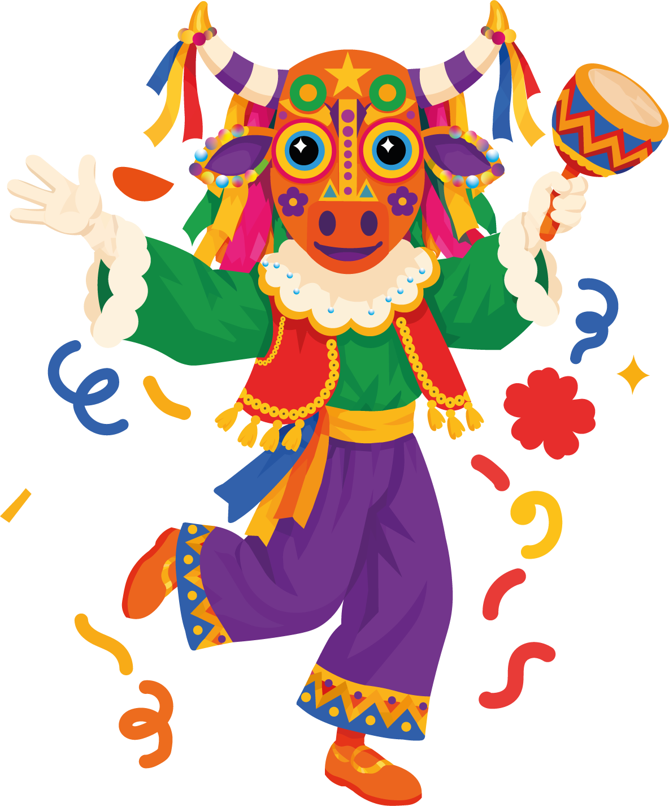
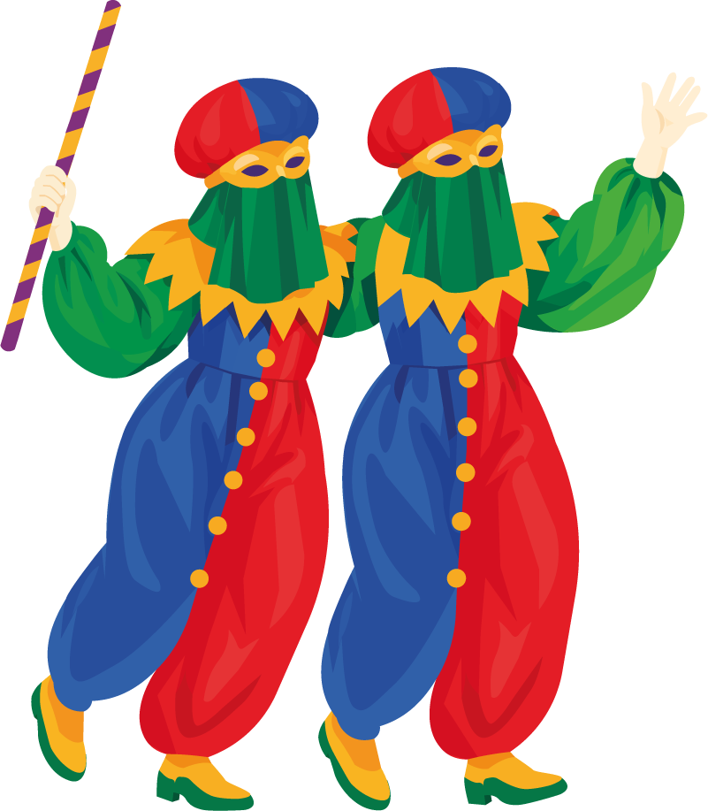

Preguntas frecuentes
¿Qué es el Carnaval de Barranquilla?
Es una de las fiestas culturales más importantes de Colombia, donde se reúnen música, danzas, disfraces, comparsas y tradiciones de diferentes raíces culturales.

¿Cuándo se celebra el Carnaval?
Se celebra tradicionalmente durante los días previos al Miércoles de Ceniza, entre febrero y principios de marzo, según el calendario de cada año.
Para 2027, está previsto para el 6, 7, 8 y 9 de febrero.
¿Qué representan las máscaras del Carnaval?
Representan la creatividad, el humor, la tradición y la libertad de expresión. Personajes como la Marimonda permiten jugar con la identidad y romper con la rutina.


¿Qué ropa debo llevar para disfrutar de la fiesta?
Se recomienda usar ropa fresca, zapatos cómodos, protector solar y llevar agua. También es importante cuidar las pertenencias y respetar el espacio de los demás.
¿Es necesario usar un disfraz para participar?
No, puedes disfrutar de los desfiles y las actividades con ropa cómoda. Si deseas disfrazarte, puedes elegir una máscara o un vestuario que represente tu personalidad y te permita expresarte libremente.
